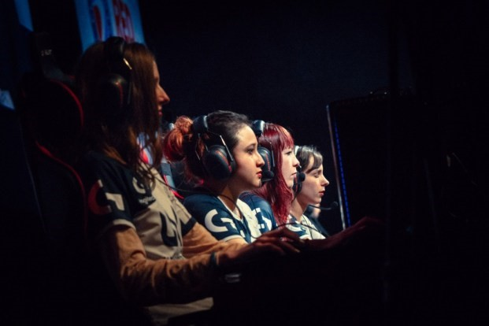

Le E-sport (contraction de electronic et sport) est un concept inventé aux Etats Unis qui consiste à digitaliser un sport « normal » en y jouant à travers un écran, une manette ou un smartphone, ordinateur…
EN 2016, le Comité international olympique reconnait le e-sport comme un sport à part entière, il existe pour cela différentes pratiques : en loisir, en amateur, ou en tant que professionnel avec une équipe et de façon rémunérée (ex : pendant les LAN PARTY)
Lien vers un reportage sur une LAN Party à l'Occitanie E-sport
Le E-sport est donc accessible pour tous de chez soi à de grandes compétitions et il s’ouvre à tout type de personnes, et également aux femmes qui sont de plus en plus représentés dans les LAN party. Par exemple, l’équipe des unKnights Ladies, lors de la finale League of Legends de l’ESWC 2015, à la Paris Games Week.
